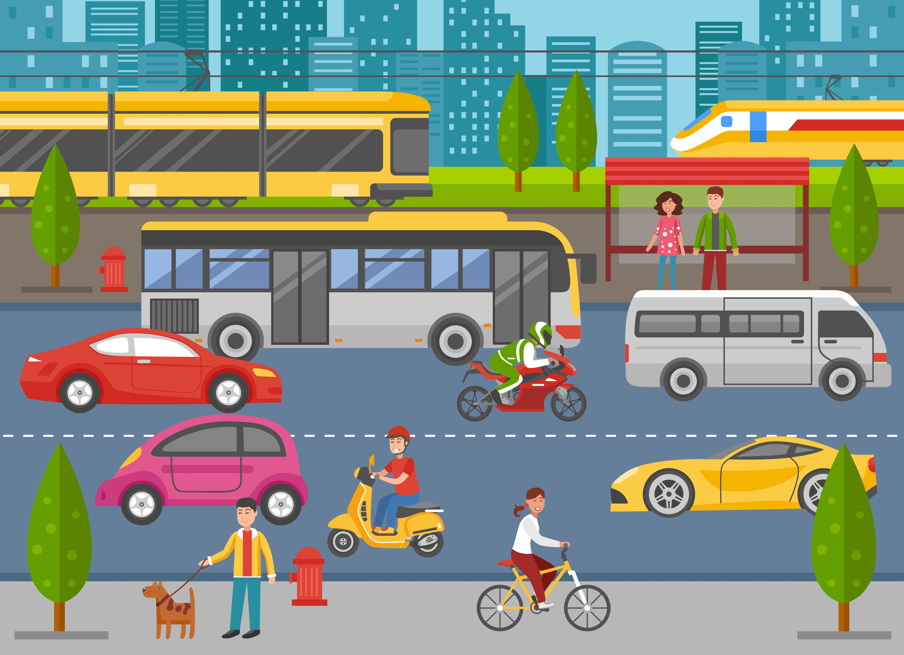

Take a look at our
Transport Facility
SBBS University provides bus facility for students and staff members and it covers every corner of the City and near about areas. College owns fleet of 15 buses equipped with safety features fire extinguishers, First-aid Box. Opting for College Bus transport will enable safe transport and convenience.